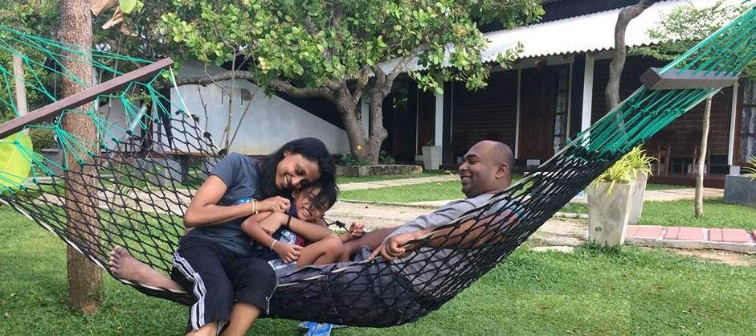

|
BiographyI'm Shenal Wanigasekara was born on December 28th, 1981 in Sri Lanka. I am 39 years old. My home town is Sri Jayawardhanapura - Kotte situated in Western province, Sri Lanka. Usually I like teaching - Peer Tutoring, travelling, join hand in Volunteer Work and Community Services, reading books, Playing and Watching Cricket Matches and watching movies in my leisure time which help me to relax my mind and body. My family is consisting of my spouse, Son, mother in law, father in law and myself. My spouse is worked at Sri Lanka Telecom as a Marketing officer. |
|
| SHENAL WANIGASEKARA | |
|
Phone : Local : +8170-8356-3836 International: +9471-8323-5564 Email : shenalrad@gmail.com Address : No.41 Komatsubara Kitamachi, Kita Ward, Kyoto Linkedln : Linkedln | https://www.linkedin.com Skill Highlights
Languages
|
Personal Details
Working ExperienceEducation & Certifications Qualification |
Hobbies Sri Lanka Cricket ICC World Cup, 1996 Playing Cricket, Watching Soccer, Science and technology studies, Photography, Whale watching, Meditation
My Unforgetable Memory Sri Lanka Navy - Frount Line of the Defence My Sweet Family  |
| My Location | My favorite Songs | My favorite Videos | |
|
|
My Favorite Singer |
Beauty of Sri Lanka |
|